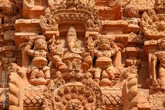
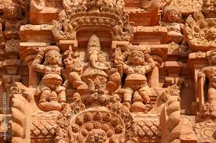
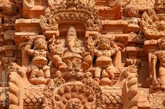

A Glimpse Into Timeless Beauty


 



Welcome to Thanjavur a timeless city where ancient temples touch the skies, art speaks through brushstrokes, and culture lives in every heartbeat. From the awe-inspiring Brihadeeswara Temple to the vibrant streets echoing with classical music and tradition, Thanjavur is not just a destination, it’s an experience. Dive into its royal legacy, savour its soulful charm, and let this blog be your guide to the cultural crown of Tamil Nadu.
Whether you're a history enthusiast, a spiritual seeker, or a curious traveler, Thanjavur has something magical for you. Discover centuries-old temples carved with divine precision, get mesmerized by the elegance of Tanjore paintings, and immerse yourself in the rhythms of classical dance and music. This blog explores the soul of Thanjavur – one story, one temple, and one tradition at a time.
Join us as we journey through the world's cultural treasures – one story at a time.
EXPLORE MORE
